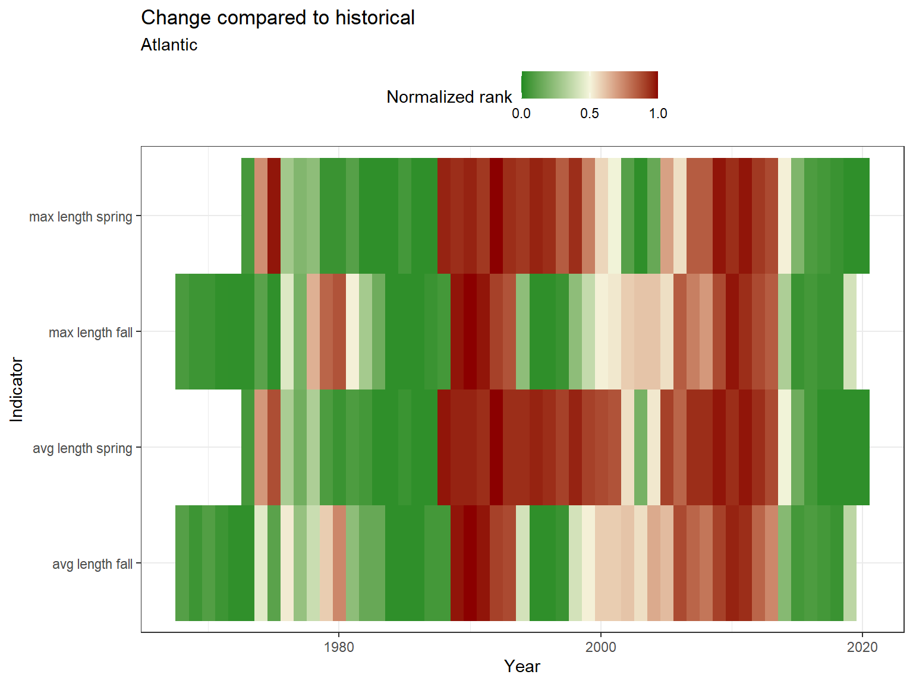

3.1 Length
Length data were pulled from survdat. Only years with more than 10 fish lengths were considered for analysis.
3.1.1 Figures
Separate geom_gls() functions were fit for the minimum, mean, and maximum lengths; trend lines are only shown when the trend was statistically significant, so some plots may have fewer than three trend lines. Please note, sometimes the survey observed a small number of fish outside of the defined stock area.
Figure 3.1: Atlantic halibut

Figure 3.2: Atlantic halibut
Risk
See Methods for risk calculation details.

(#fig:risk_stock)Atlantic halibut

(#fig:risk_stock2-1)Atlantic halibut

(#fig:risk_stock2-2)Atlantic halibut
3.1.2 Summary
| Season | Region | Mean value +- SD (n fish, n years) | Mean value +- SD (n fish, past 5 years) | Range (total) | Range (past 5 years) |
|---|---|---|---|---|---|
| FALL | all | 47.24 +- 9.13 (29, 2) | 47.24 +- 9.13 (29, 2) | 16 - 69 | 16 - 69 |
| FALL | Outside stock area | 51.97 +- 17.21 (300, 18) | 60.39 +- 14.23 (41, 3) | 13 - 150 | 34 - 98 |
| SPRING | all | 55.64 +- 24.13 (143, 9) | 58.09 +- 27.37 (54, 3) | 9 - 193 | 29 - 193 |
| SPRING | Outside stock area | 49.91 +- 19.13 (278, 15) | 54.26 +- 21.32 (42, 3) | 16 - 170 | 24 - 107 |
3.1.3 Data
(#fig:length_data)Atlantic halibut